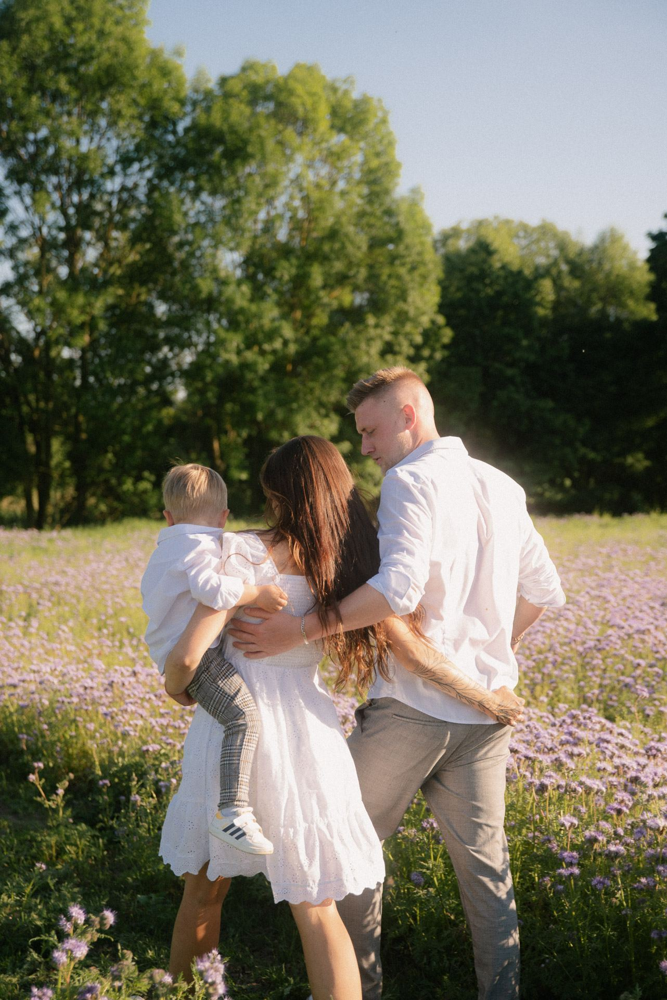
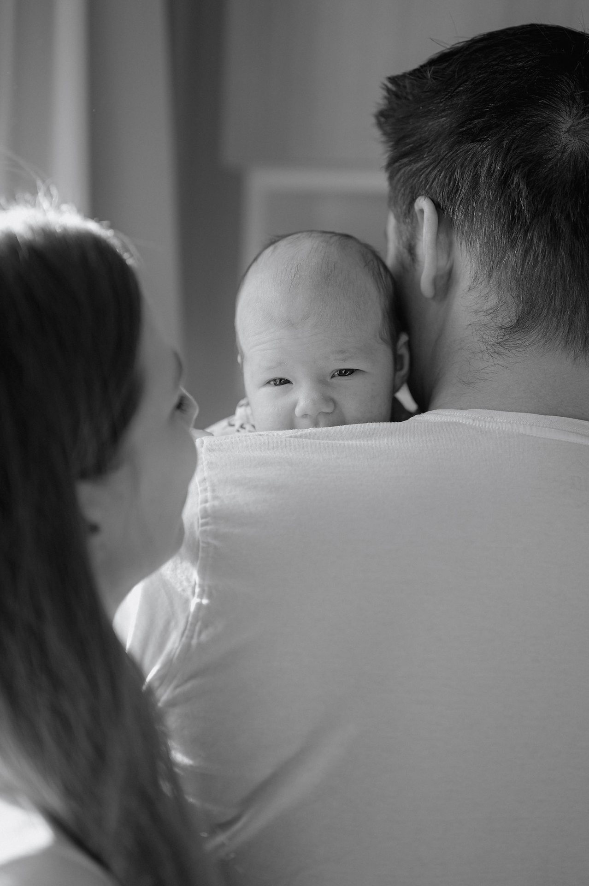
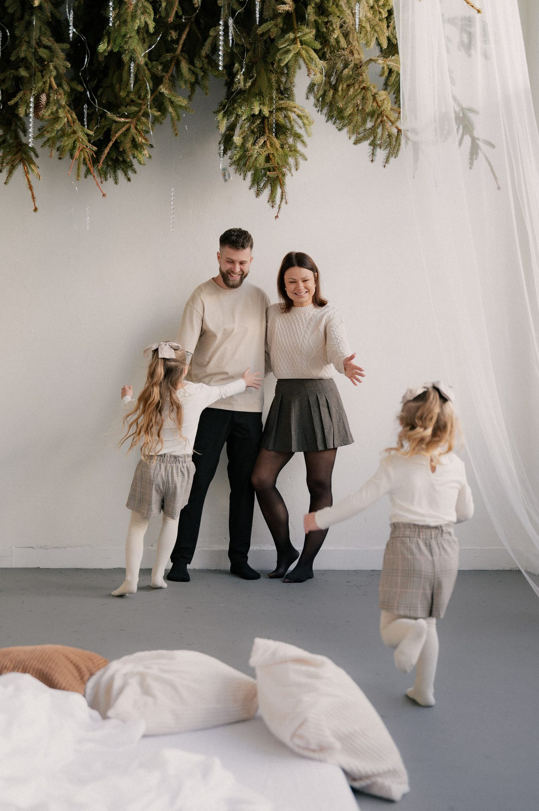
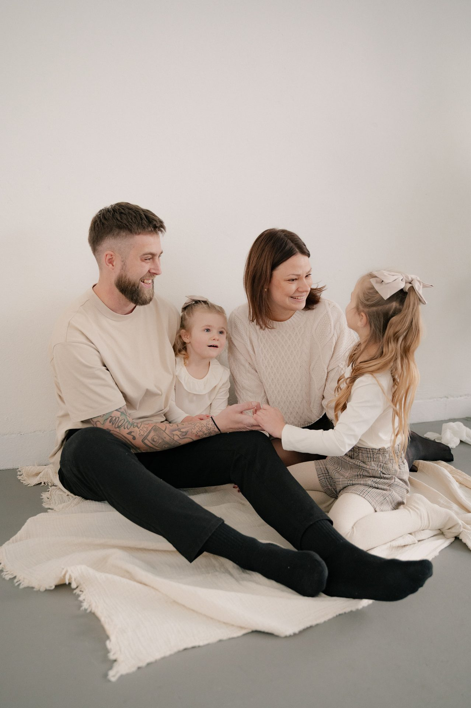
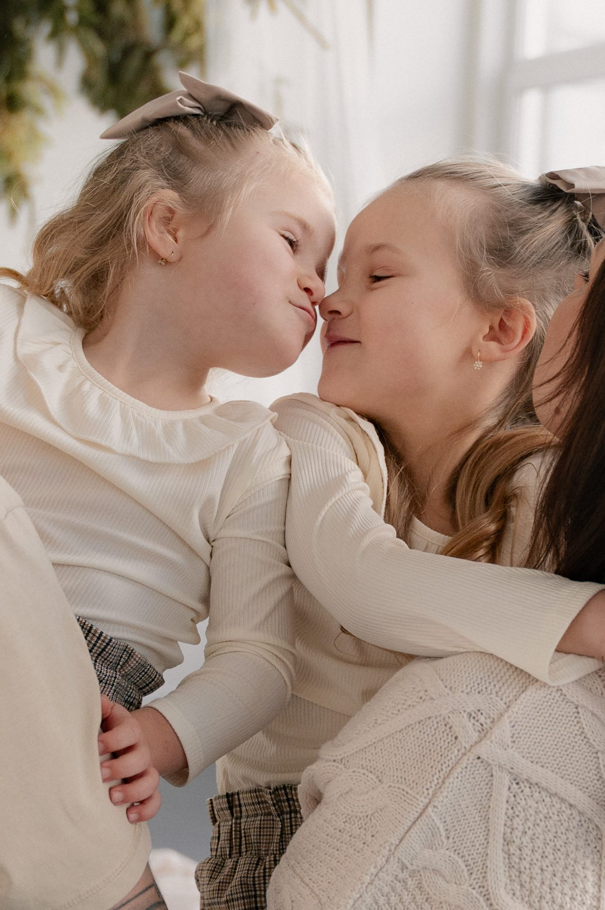
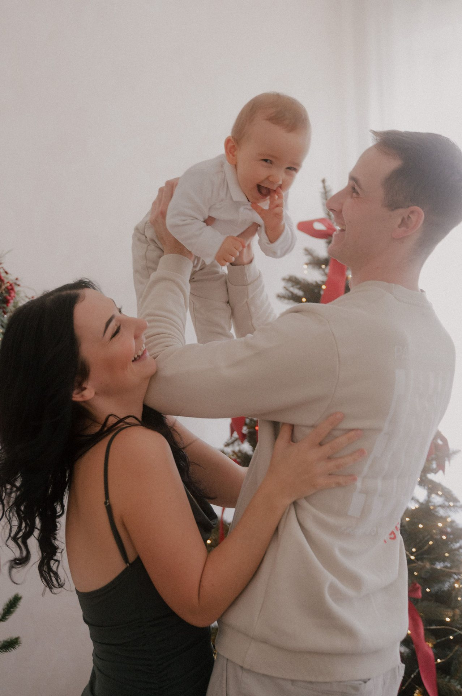
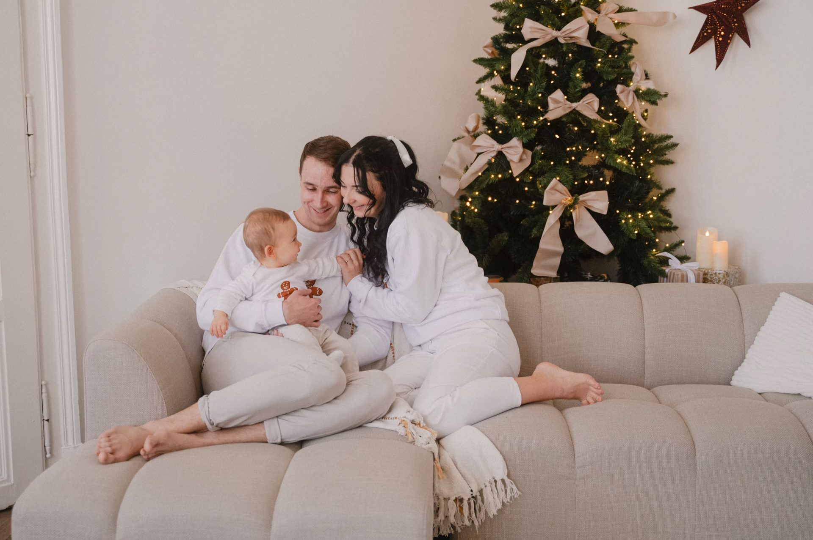

rodinné focení bez stresu: 7 tipů, jak se připravit
Rodinné focení by nemělo být o stresu, ale o pohodě. Nemusíte mít všechno dokonalé, děti nemusí stát na místě, a už vůbec nemusíte mít pocit, že musíte „umět pózovat“.
Cílem je zachytit vás takové, jací jste – přirozeně, autenticky a v pohodě. 🤍
Aby focení proběhlo co nejlépe, sepsala jsem pár jednoduchých tipů, které vám pomůžou se připravit – a zároveň si to celé opravdu užít.
1. vyspěte se (nebo ať jsou vyspané aspoň děti 😄)
Kdybyste si z celého článku měli odnést jen jednu věc, bude to první a poslední bod tohoto článku (tedy bod 1 a bod 7). 🙏🏻
Vyspané děti = spokojené děti. Pokud fotíme odpoledne, zkuste, aby měly klidné dopoledne a dostatek jídla i pití. A když budete vyspaní i vy, bude to to nejlepší, co můžete udělat. Nezapomeňte totiž, že děti jsou jako zrcadlo a když z nás cítí, že nejsme v pohodě, nebudou ani ony. 🌿
2. oblečení – méně je více
Držte se jednoduchosti a tónů, které k sobě ladí. Zemité barvy, béžová, krémová, tlumená zelená, světle hnědá – to nikdy nezklame. Vyhněte se křiklavým barvám, velkým logům a vzorům. Podrobněji jsem se rozepsala v článku co si vzít na sebe na focení (a pokud se chystáte na Vánoce, tak i v článku jak se obléct na vánoční focení).
🧺 Malý tip: připravte si oblečení dostatečně předem, abyste to neřešili pár minut před odjezdem na focení.
3. přibalte drobnosti, které děti milují 🧸
Hračku, plyšáka, oblíbený hrníček nebo sušenky – cokoli, co pomůže uvolnit atmosféru. Často právě tyhle malé rekvizity udělají fotky ještě osobnějšími.


4. jídlo ano, ale s rozmyslem
Někdy je potřeba doplnit energii a je to úplně v pohodě. Pokud budete na focení brát nějaké jídlo, zkuste se vyhnout čokoládě. Jestli chcete opravdu realistické fotky a chcete, aby se vaše dítě patlalo ve svém prvním dortu – I’m all in! 😄 Ale pokud se jedná o „obyčejné“ rodinné focení, čokoláda vám může lehce zašpinit oblečení – a to nechceme.
5. nepřehánějte to s přípravami 🫶🏻
Není potřeba, aby bylo všechno dokonalé. Nejkrásnější fotky vznikají, když jste sami sebou. Když se smějete, běháte, děláte si legraci – prostě když žijete.
Focení není soutěž o nejhezčí rodinu, ale o zachycení vašeho vztahu a lásky. 🤍

6. nebojte se pohybu
Nechci po vás, abyste stáli jako přikovaní a dívali se do objektivu – dobře, možná uděláme jednu takovou fotku pro babičku, ale u té to skončí. 😄
Budu vás navádět tak, aby to bylo přirozené – procházka, hra s dětmi, tanec nebo klidné objetí. Když se budete hýbat, přirozeně zapomenete na foťák – a právě tehdy vznikají ty nejhezčí momenty.

7. všechno nechte trochu plynout ☀️
Připravte se, ale netlačte na dokonalost. Když dítě nechce spolupracovat, nic se neděje a hlavně, je to úplně normální. Děti nejsou stroj, aby hodinu v kuse poslouchaly naše pokyny. Nemusí mít neustále úsměv od ucha k uchu.
Nechme děti, aby byly dětmi a klidně i tím, kdo bude určovat průběh focení. Chtějí jít k vodě a hrát si s kamínky? Super! Pojďme všichni! Chtějí dělat závody v běhu? Můžeme!

Děti nás svými nápady dokážou nádherně uvolnit – a je krásné, když se i dospělí nechají strhnout a na chvíli se znovu stanou dětmi.
A navíc, někdy z toho, co se zdá jako „nepovedená chvilka“, vznikne ta nejhezčí fotka z celého focení.
Rodinné focení není o perfektnosti. Je o vás – o tom, že jste spolu, že se smějete, že máte mezi sebou něco, co stojí za zachycení. A pokud si z toho kromě krásných fotek odnesete i hezký společný zážitek, splnilo to přesně svůj účel. 🌿
📩 Chcete si domluvit rodinné focení v Brně nebo okolí? Napište mi – společně to vymyslíme tak, aby to bylo přesně „vaše“. Ceny najdete v ceníku a ukázky rodinných fotek v portfoliu.
Znáš někoho, komu by tenhle článek pomohl? Klidně mu ho pošli.

ahoj, jsem sofi
Fotím svatby, rodiny a značky v Brně a Bratislavě. Mám ráda přirozené momenty, jemné barvy a lidi, kteří se nebojí být sami sebou.
napiš michci se o tobě dozvědět víc 🤍portfolioceníkmohlo by tě zajímat
Další články, které se ti můžou hodit.

rady před focením · 4 min čteníjak se obléct na vánoční focení v ateliéru
Nevíte, co si vzít na vánoční focení? Mám pro vás pár tipů, jak se obléct tak, aby fotky působily přirozeně, útulně a nadčasově.
číst dálrady před focením · 3 min čtenírodinné focení jako vzpomínka: proč má smysl ho dělat pravidelně
Čas letí. Všichni to říkáme, ale naplno si to uvědomíme většinou až při pohledu na staré fotky. Proč má smysl fotit rodinu pravidelně a proč to tak miluju.
číst dál rady před focením · 3 min čtení
rady před focením · 3 min čteníuniverzální lokace na focení, které máte na dosah
Často mi lidé píšou, že kolem sebe nemají žádné hezké místo na focení. A pokaždé se usměju, protože krásné fotky nevznikají díky místu, ale díky vám.
číst dál